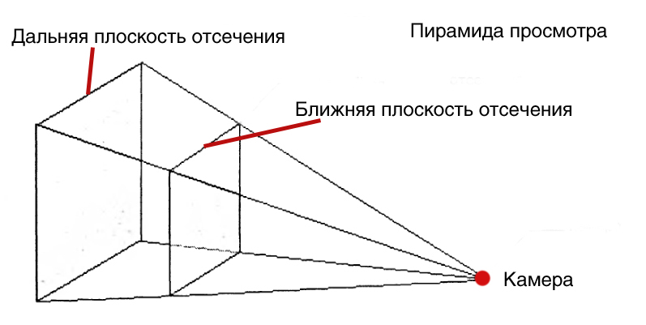

Добавим матрицу Проекции
Загрузить архив с примерами ЗДЕСЬ.
Не спутайте проекцию и перспективу. Проекция- за нее отвечает матрица проекции, при помощи матрицы проекции мы можем изменять угол обзора, корректировать x в соответствии с aspect ratio. Перспектива- это деление x, y на z- т.е. те объекты что ближе, имеют больший размер, те объекты что дальше, имеют меньший размер.
В трехмерной графике есть такое понятие как пирамида просмотра. В пирамиде просмотра есть шесть плосокстей- ближняя плоскость отсечения, дальная плоскость отсечения, левая, правая, верхняя и нижняя. Если модель не целиком помещается в пирамиде просмотра, ее треугольники обрезаются таким образом, что бы вершины модели не выходили на границы пирамиды просмотра. Вне пирамиды просмотра координаты меняют свое значение, например выше верхней плоскости отсечения, т.е. за пределами верхней кромки экрана координата Y будет иметь отрицательное значение и значения будут расти вверх. В то время как в обычном случае, координата Y имеет положительное значение и значения растут вниз начиная с левого верхнего угла экрана.
В этом примере мы разместим куб на +15 единиц по оси Z. Наблюдателя оставим по Z в нулевой позиции, и поднимем его по оси Y на +10 единиц, что бы смотреть на куб с боку и сверху. Вот как это выглядит в координатах вектора:
vertex vModelPos = { 0.0f, 0.0f, 15.0f }; //позиция модели
vertex vPos = { 0.0, 10.0f, 0.0f }; //позиция камеры или наблюдателя
vertex vLook = vModelPos - vPos; //вектор куда смотрит камера
Матрица проекции осуществляет коррекцию x коорданаты. Если раньше мы делали так:
//учитываем аспект v.x = v.x / (nViewWidth / nViewHeight);
То теперь это делает матрица Проекции. Кроме того при помощи матрицы проекции можно менять угол обзора- то есть делать обзор на экране больше или меньше.
Теперь давайте рассмотрим матрцу проекции.
w/fAspect 0.0 0.0 0.0 0.0 h 0.0 0.0 0.0 0.0 Q 1.0 0.0 0.0 -Q*Zn 0.0
В этой матрице w, h, Q определено по формуле:
w = cot(FOV/2) h = cot(FOV/2) Q = Zf/(Zf – Zn) fAspect = ScreenWidth / ScreenHeight Zn - ближняя плоскость отсечения Zf - дальная плоскость отсечения
Один из параметров, который описывает 3D пространство это FOV – поле обзора. Поле обзора описывает какие объекты есть видимы из определенной позиции, при наблюдении их в определенном направлении. Люди имеют поле обзора- то что они видят перед собой, так как невозможно увидеть то, что позади, слишком близко или слишком далеко от человека. В компьютерной графике поле обзора содержит view frustum- это усеченная пирамида, усеченное видовое пространство. Усеченное видовое пространство имеет 6 плоскостей, две из которых паралельны YX плоскости и они все вместе созают вид ограниченного конуса, вроде прожектора, луча света из прожектора в котором мы в темноте видим предметы. Две плоскости, те которые параллельны плоскости проведенной через оси YX, создают ближнюю и дальнюю плоскость отсечения, названные Near-Z и Far-Z плоскость. Графический процессор фильтрует объекты которые вне усеченного конуса вида- эти объекты не попадают в поле обзора и не обрабатываються конвеером рендеринга. Это называеться clipping- обрез. Усеченное поле обзора это пирамида, вершина которой урезана. Графический процессор проверяет находиться вершина внутри этой пирамиды, или нет, и решает выводить ее на экран монитора или нет. Клиппинг происходит после того как вершины прошли финальную стадию трансформаций- проекционную трансформацию.
w = (cot(FOV/2) / fAspect = (1 / tan(FOV/2)) / fAspect h = (cot(FOV/2) = (1 / tan(FOV/2)) Q = Zf/(Zf – Zn) Zn - ближняя плоскость отсечения Zf - дальняя плоскость отсечения
Первая и вторая колонки матрицы проекции масштабируют x и y каждой вершины так что бы мы могли достичь произвольного поля обзора FOV и сохранить пропорции объекта на экране (так как ширина экрана больше чем высота нам нужен учет аспекта). Эти колонки позволяют сохранять пропорции изображения при разном FOV, так же когда высота экрана Y отличается от ширины экрана X- то есть учитывается аспект.
Третья колонка матрицы проекции масштабирует компонент Z на диапазон от ближней плоскости отсечения до дальней плоскости отсечения. Становиться понятно что третья колонка проекционной матрицы устанавливается таким образом, что бы при выходе из матрицы проекции и последующего деления Z компонента на W мы получили значение в диапазоне от 0.0 до 1.0. Мы не используем Z- buffer и деление на W в примерах данного материала касательно проволочных моделей, но например в конвеере рендеринга DirectX после умножения вершины на матрицу проекции производится деление всех компонент на Vec_Res.W.
Vec_Res = Vec * mxProjection; Vec_Res.x = Vec_Res.x / Vec_Res.w; Vec_Res.y = Vec_Res.y / Vec_Res.w; Vec_Res.z = Vec_Res.z / Vec_Res.w;
Теперь Vec_Res.x и Vec_Res.y могут использоватся для рендеринга модели в 2D пространстве экрана, а Vec_Res.z используется для заполнения Z- буфера.
fZNear т.е. ближняя плоскость отсечения не может быть равна нулю, потому что выражение третьем столбце матрицы проекции -Q*fZNear всегда будет равно нулю, а после выхода из матрицы проекции мы делим на W, и получается рушится вся концепция и а это приведет к артифактам- мы не получим значение глубины от 0.0 до 1.0. Весь ньюанс заключается в том, что нам нужно заполнить Z буффер. Z буффер нам нужно заполнять значениями глубины от 0.0 до 1.0. Поэтому после умножения на матрицу проекции мы делим на W и получаем этот диапазон от 0.0 до 1.0. Когда третья колонка матрицы проекции не установлена и W=Z то при делении Z на W мы всегда будем получать глубину 1.0- это мало полезно всегда иметь глубину 1.0 для всех вершин.
//матрица проекции //глубина Z 1.0 для всех вершин //не очень полезно для нас w/fAspect 0.0 0.0 0.0 0.0 h 0.0 0.0 0.0 0.0 1.0 1.0 0.0 0.0 0.0 0.0Поэтому в третьей колонке матрицы проекции мы будем масштабировать Z компонент на некоторый диапазон, перед делением его на W. В свою очередь в четвертой колонке матрицы проекции мы получаем W = Z. После умножения на матрицу проекции мы делим на W, то есть результат умножения Z вектора на третью колонку матрицы - это у нас величина Z вектора (который мы наложили на диапазон от ближней плоскости отсечения до дальней) мы делим на W и получаем значение в диапазоне от 0.0 до 1.0 что вполне подходит для заполнения Z буфера. Следует упомянуть что Z буфер не линейный.
Z буфер не используется при выводе на экран проволочных моделей. Назначение Z буфера следующее. Предположим у нас Z буфер может быть в диапазоне от 0 до 255 (для примера, так как Z буфер содержит значения от 0.0 до 1.0). К примеру размеры экрана приложения 640 на 480. Мы создаем массив float размером 640 на 480. Мы очищаем этот массив Z буфера занося в него значение 255. Далее в процессе рендеринга, мы интерполировали значения между вершинами треугольника, и получили глубину пикселя Z равно 25 в точке экрана x = 300, y = 200. Теперь мы должны взять значение из Z буффера в этом месте массива [300][200] и сравнить есть со значением 25. Выходит 25 меньше чем 255 - значит пиксель ближе к зрителю. Мы заносим значение 25 в то место массива Z буфера с индексом [300][200] и выводим пиксель на экран в позицию x=300 y= 200. Далее мы интерполируем вершины следующего треугольника. Мы получаем в точке экрана x= 300 и y = 200 значение глубины 100. Мы сравниваем 100 со значением из массива Z буфера, а там у нас лежит значение 25. Выходит 25 меньше чем 100, поэтому пиксель второго треугольника мы не заносим в Z буффер и не рисуем пиксель на экране. Аналогично процедура происхоидт и далее со всеми значениями пикселей, которые рисуются на экране во время рендеринга. Z буфер будет рассмотрен в Реализация камеры на сцене. Использование Z- буффера
Для наших расчетов в рамках данного изложения мы не будем пользоваться значениями глубины от 0.0 до 1.0 поэтому фактически третья и четвертая колонки матрицы проекции нам не нужны. В наших расчетах мы просто x,y делим на z компоненту. Матрица проекции приведенная выше используется в конвеере рендеринга DirectX. В главе Реализация камеры на сцене. Использование Z- буффера мы организуем работу Z буфера, но будем заносить занчения реальной глубины, т.е. значение Z не в пределах от 0 до 1.0. Если например у нас в расчетах глубина Z выходит 20.0 или 35.0 - мы не будем ее приводить к значению от 0.0 до 1.0 а будем прямо эту глубину записывать в Z буфер. Тем более мы не используем глубину от 0.0 до 1.0 так как для этого нужно что бы вектор (одна вершина модели) был четырехкомпонентный 1х4, т.е. vec(x,y,z,w), где w принимаем равно 1 vec(x,y,z, 1). Тогда этот четырехкомпонентный вектор 1х4 можно умножить на матрицу проекции 4х4 и после результата разделить vec.x/vec.w, vec.y/vec.w, vec.z/vec.w. После деления vec.z/vec.w мы получим значение от 0.0 до 1.0. Но в наших примерах мы не делим на w, так как у нас трехкомпонентный веткор, мы делим просто на z компоненту что бы получить перспективу. Но можно конечно, и умножить трехкомпонентный вектор на матрицу проекции, и получить z в диапазоне от 0.0 до 1.0 при помощи следующего трюка, нужно только старое значение z перед умножением на матрицу проекции сохранить в переменной, как в коде ниже:
vertex3 v = Vec3_Mat4x4_Mul(vert_buff[i], mxWorld); v = Vec3_Mat4x4_Mul(v, mxView); float Old_Z = v.z; v = Vec3_Mat4x4_Mul(v, mxProj); v.x = v.x / v.z; v.y = v.y / v.z; v.z = v.z / Old.Z; // получаем глубину Z от 0.0 до 1.0
Для наших расчетов мы можем упростить матрицу проекции, так как у нас трехкомпонентный вектор, мы на w делить не будем, нам не нужна глубина z от 0.0 до 1.0, нас устроит просто наличие перспективной проеции (то есть x и y делятся на z), тогда матрица проекции будет такой:
//матрица проекции
//упрощенный вариант
w/fAspect 0.0 0.0 0.0
0.0 h 0.0 0.0
0.0 0.0 1.0 0.0
0.0 0.0 0.0 1.0
//полный расчет будет приведен ниже
matrix4x4 mxProj={
w, 0, 0, 0,
0, h, 0, 0,
0, 0, 1, 0,
0, 0, 0, 1 };
Но для полноты изложения мы используем матрицу проекции с fZNear, fZFar, рассчитываем величину Q. Полная версия матрицы проекции используется в DiretX.
Матрица проекции рассчитываеться с использованием следующих исходных данных- ширина и высота экрана нужна для вычисления корректировки пропорции разницы ширины и высоты экрана, т.е. aspect ratio. Угол обзора FOV (filed of view) в радианах используеться что бы увеличить или уменьшить угол обзора. Ближняя и дальная плоскость отсечения zNear и zFar используюсться что бы "упаковать" результирующие координаты вершин в этот промежуток между zNear и zFar, подготовив координаты для деления на Z (так как на 0 делить нельзя используеться zNear в матрице проекции). Интересное наблюдение что тангенс 45 градусов или 3.1415926 / 4.0 - равен 1, и в предыдущем примере в начале статьи, мы не использовали матрицу Проекции. Теперь в данном примере с матрицей Проекции если взять FOV 90 градусов или Пи поделить на 2.0, после расчета мы получим ту же картинку и то же поле обзора что в предыдущем примере без использования матирцы Проекции. Ктоме того для уточнения, в расчете програмного рендеринга, вращение по Y, и FOV для матрицы Проекции беруться в радианах, если взять в градусах расчеты приведут к неверному результату. Более "родными" для математики считаються расчеты углов в радианах. Рассчет матрицы проекции выглядит так:
typedef float matrix4x4[4][4];
float fFov = 3.14f/2.0f; // FOV 90 degree
float fAspect = 640.0/480.0;
float fZFar = 100.0f;
float fZNear = 1.0f;
float h, w, Q;
w = (float)(1/tan(fFov*0.5f))/fAspect;
h = (float)1/tan(fFov*0.5f);
Q = fZFar/(fZFar - fZNear);
matrix4x4 mProj={
w, 0, 0, 0,
0, h, 0, 0,
0, 0, Q, 1,
0, 0, -Q*fZNear, 0 };
Итак, подведем итог, что делает матрица Проекции с вершиной модели. Первая колонка матрицы проекции относиться к координате x вершины, первая колонка корректирует координату x с учетом величины поля обзора FOV, и учитывает аспект (ширина экрана больше чем высота). Вторая колонка матрицы проекции корректирует координату y вершины модели, с учетом величины поля обзора FOV. Третья колонка матрицы проекции готовит координату z вершины для деления на w. После умножения на матрицу проекции мы можем z поделить на w и получить z в диапазоне от 0 до 1.0, что нужно для расчетов Z буффера (так делается в API DirectX). Четвертая колонка матрицы проекции берет z координату вершины и заносит ее в позицию w в выходном векторе. После умножения на матрицу проекции w получается равно z вектора, и мы делим z на w.
Загрузить проект /src/01.010-mx_proj/Cube_RotateY_mxProj_1.
Сокращаем время вычислений не умножая на матрицу проекции но с ее исползованием. Загрузить проект /src/01.010-mx_proj/Cube_RotateY_mxProj_2.
Еще один способ сократить вычисления. Загрузить проект /src/01.010-mx_proj/Cube_RotateY_mxProj_3. В данном примере можно это вычисление из функции Draw_Cube():
( (rc.bottom / 2.0f) * (1.0f / tanf(fFov * 0.5f)) );
Вынести в отдельное место, в функцию инициализации, что бы во время рендеринга куба этот расчет уже был готов. Т.е. так:
void Init_Cube()
{
float Persp = (rc.bottom / 2.0f) * (1.0f / tanf(fFov * 0.5f));
}
void Draw_Cube()
{
v.z = v.z / Persp;
v.x = v.x / v.z + rc.right / 2.0f;
v.y = -v.y / v.z + rc.bottom / 2.0f;
vert_buff_transformed[i] = v;
}
Еще один способ сократить вычисления, загрузить проект /src/01.010-mx_proj/Cube_RotateY_mxProj_4.
И еще один способ сократить вычисления, загрузить проект /src/01.010-mx_proj/Cube_RotateY_mxProj_5. В этом проекте используется заранее вычисленное значение проекции для глубины вершины Z - используется массив ZTalbe.
В следующем примере показан исправленый пример Cube_RotateY_mxProj_5 - в примере Cube_RotateY_mxProj_5 используется округление вершины Z с float до int, для использования Z вершины как индекса в массиве ZTalbe. В примере Cube_RotateY_mxProj_5 наблюдались искажения при отображении так как происходило округление float до int. В этом примере Cube_RotateY_mxProj_6 увеличен размер вершин с 4.0f до 40.0f и отображение происходит без искажений. Так же увеличино расстояние камеры, и позиция куба так как были увеличины размеры вершин (это значит куб дальше отодвинут в глубину сцены).
//было в Cube_RotateY_mxProj_5
vector3 g_VertBuff[8] = {
-4.0, -4.0, -4.0, //A
4.0, -4.0, -4.0, //B
-4.0, 4.0, -4.0, //C
4.0, 4.0, -4.0, //D
-4.0, -4.0, 4.0, //E
4.0, -4.0, 4.0, //F
-4.0, 4.0, 4.0, //G
4.0, 4.0, 4.0 }; //H
vector3 VecPos = { 0.0f, 10.0f, 0.0f };
vector3 VecModelPos = { 0.0, 0.0, 15.0 };
//стало Cube_RotateY_mxProj_6 - отображение без искажений используя массив ZTable
vector3 g_VertBuff[8] = {
-40.0, -40.0, -40.0, //A
40.0, -40.0, -40.0, //B
-40.0, 40.0, -40.0, //C
40.0, 40.0, -40.0, //D
-40.0, -40.0, 40.0, //E
40.0, -40.0, 40.0, //F
-40.0, 40.0, 40.0, //G
40.0, 40.0, 40.0 }; //H
vector3 VecPos = { 0.0f, 100.0f, 0.0f };
vector3 VecModelPos = { 0.0, 0.0, 150.0 };
Посмотрите как работает конвеер рендеринга DirectX 9. Загрузить проект /src/01.010-mx_proj/DX9_Soft_Rend_1. Для компиляции проекта вам необходимо подключить заголовочные файлы и библиотеки из DirectX SDK 9, я пользовался DirectX SDK June 2010. Тот же проект для DirectX 9 с использованием структур DirectX - загрузить проект /src/01.010-mx_proj/DX9_Soft_Rend_2. В этих двух примерах растеризацию треугольников из которых состоит куб (т.е. наложение текстуры на куб), выполняет функция DirectX DrawIndexedPrimitiveUP(). Мы передаем этой функции рассчитанные вершины куба в экранных координатах. Далее в последующих главах мы научимся сами проводить растеризацию треугольника, и выведем на экран текстурированный куб. Так же посмотрите пример/src/01.010-mx_proj/DX9_Soft_Rend_3 - здесь в шейдер передаются экранные координаты и в шейдере выполняется текстурирование с учетом перспективы. Не важно какими шейдерами вы пользуетесь - DX9, DX10, DX11, DX12 - этот способ работает в шейдере любой версии DX.
#define _WIN32_WINNT 0x0500
#include <windows.h>
#include <conio.h>
#include <math.h>
HWND hWnd;
struct vertex {
float x, y, z;
};
enum { A, B, C, D, E, F, G, H };
vertex vert_buff[8] = {
-4.0, -4.0, -4.0, //A
4.0, -4.0, -4.0, //B
-4.0, 4.0, -4.0, //C
4.0, 4.0, -4.0, //D
-4.0, -4.0, 4.0, //E
4.0, -4.0, 4.0, //F
-4.0, 4.0, 4.0, //G
4.0, 4.0, 4.0 }; //H
vertex vert_buff_transformed[8];
/*
FONT SIDE BACK SIDE
C - D G - H
| | | |
A - B E - F
*/
unsigned int index_buff[24] = {
A, B,
B, D,
D, C,
C, A,
E, F,
F, H,
H, G,
G, E,
A, E,
B, F,
D, H,
C, G };
typedef float matrix4x4[4][4];
vertex Vec3_Mat4x4_Mul(vertex v, matrix4x4 m)
{
vertex t;
t.x = v.x * m[0][0] +
v.y * m[1][0] +
v.z * m[2][0] +
m[3][0];
t.y = v.x * m[0][1] +
v.y * m[1][1] +
v.z * m[2][1] +
m[3][1];
t.z = v.x * m[0][2] +
v.y * m[1][2] +
v.z * m[2][2] +
m[3][2];
return t;
}
float Vec3_Dot(vertex v1, vertex v2)
{
return v1.x * v2.x + v1.y * v2.y + v1.z * v2.z;
}
vertex Vec3_Normalize(vertex v)
{
float len = sqrtf((v.x * v.x) + (v.y * v.y) + (v.z * v.z));
vertex t = { v.x / len, v.y / len, v.z / len };
return t;
}
vertex Vec3_Cross(vertex v1, vertex v2)
{
vertex t = { v1.y * v2.z - v1.z * v2.y,
v1.z * v2.x - v1.x * v2.z,
v1.x * v2.y - v1.y * v2.x };
return t;
}
vertex Vec3_Subtract(vertex v1, vertex v2)
{
vertex temp;
temp.x = v1.x - v2.x;
temp.y = v1.y - v2.y;
temp.z = v1.z - v2.z;
return temp;
}
void Draw_Cube()
{
RECT rc;
GetClientRect(hWnd, &rc);
static float angle = 0.0;
matrix4x4 mxRotateY = {
cosf(angle), 0.0, -sinf(angle), 0.0,
0.0, 1.0, 0.0, 0.0,
sinf(angle), 0.0, cosf(angle), 0.0,
0.0, 0.0, 0.0, 1.0 };
angle = angle + (3.1415926f / 100.0f);
if (angle > (3.1415926f * 2.0f))
angle = 0.0f;
//MATRIX VIEW CALCULATION
vertex vRight = { 1.0f, 0.0f, 0.0 };
vertex vUp = { 0.0f, 1.0f, 0.0f };
vertex vPos = { 0.0f, 10.0f, 0.0f };
vertex vModelPos = { 0.0, 0.0, 15.0 };
vertex vLook = Vec3_Subtract(vModelPos, vPos);
vLook = Vec3_Normalize(vLook);
vUp = Vec3_Cross(vLook, vRight);
vUp = Vec3_Normalize(vUp);
vRight = Vec3_Cross(vUp, vLook);
vRight = Vec3_Normalize(vRight);
float xp = -Vec3_Dot(vPos, vRight);
float yp = -Vec3_Dot(vPos, vUp);
float zp = -Vec3_Dot(vPos, vLook);
matrix4x4 mxView = {
vRight.x, vUp.x, vLook.x, 0.0,
vRight.y, vUp.y, vLook.y, 0.0,
vRight.z, vUp.z, vLook.z, 0.0,
xp, yp, zp, 1.0 };
//MATRIX PROJECTION CALCULATION
float fFov = 3.14f / 2.0f; // FOV 90 degree
float fAspect = (float)(rc.right / rc.bottom);
float fZFar = 100.0f;
float fZNear = 1.0f;
float h, w, Q;
w = (1.0f / tanf(fFov * 0.5f)) / fAspect;
h = 1.0f / tanf(fFov * 0.5f);
Q = fZFar / (fZFar - fZNear);
matrix4x4 mxProj = {
w, 0, 0, 0,
0, h, 0, 0,
0, 0, Q, 1,
0, 0, -Q * fZNear, 0 };
//MATRIX WORLD
matrix4x4 mxWorld = {
1.0f, 0.0, 0.0, 0.0,
0.0, 1.0f, 0.0, 0.0,
0.0, 0.0, 1.0f, 0.0,
vModelPos.x, vModelPos.y, vModelPos.z, 1.0f };
for (int i = 0; i < 8; i++)
{
vertex v = Vec3_Mat4x4_Mul(vert_buff[i], mxRotateY);
v = Vec3_Mat4x4_Mul(v, mxWorld);
v = Vec3_Mat4x4_Mul(v, mxView);
v = Vec3_Mat4x4_Mul(v, mxProj);
v.x = v.x / v.z;
v.y = v.y / v.z;
v.x = v.x * rc.right / 2.0f + rc.right / 2.0f;
v.y = -v.y * rc.bottom / 2.0f + rc.bottom / 2.0f;
vert_buff_transformed[i] = v;
}
HDC hDC = GetDC(hWnd);
HBRUSH hBrush = CreateSolidBrush(RGB(0, 0, 0));
HBRUSH hOldBrush = (HBRUSH)SelectObject(hDC, hBrush);
Rectangle(hDC, 0, 0, rc.right, rc.bottom);
HPEN hPen = CreatePen(PS_SOLID, 4, RGB(255, 255, 127));
HPEN hOldPen = (HPEN)SelectObject(hDC, hPen);
for (int i = 0; i < 12; i++)
{
vertex v1 = vert_buff_transformed[index_buff[i * 2]];
vertex v2 = vert_buff_transformed[index_buff[i * 2 + 1]];
MoveToEx(hDC, (int)v1.x, (int)v1.y, NULL);
LineTo(hDC, (int)v2.x, (int)v2.y);
}
SelectObject(hDC, hOldBrush);
DeleteObject(hBrush);
SelectObject(hDC, hOldPen);
DeleteObject(hPen);
ReleaseDC(hWnd, hDC);
Sleep(25);
}
int main()
{
hWnd = GetConsoleWindow();
while (!_kbhit())
{
Draw_Cube();
}
return 0;
}